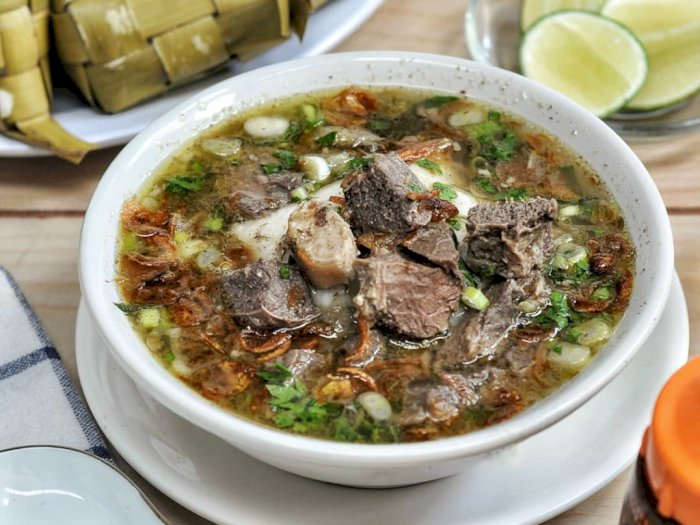
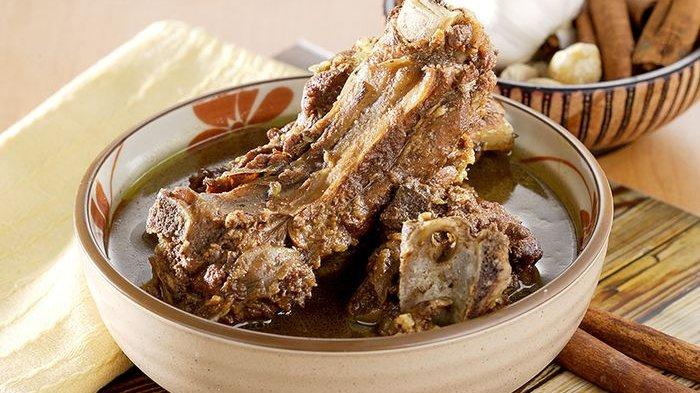
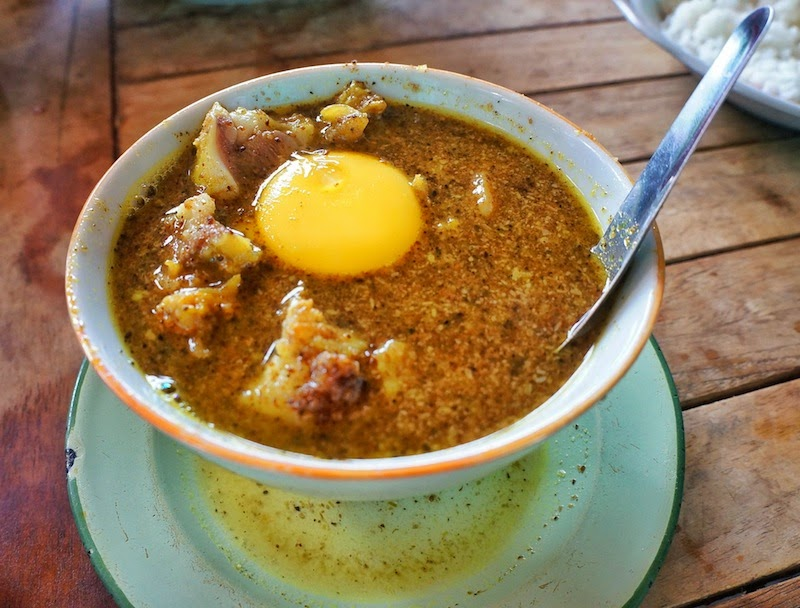
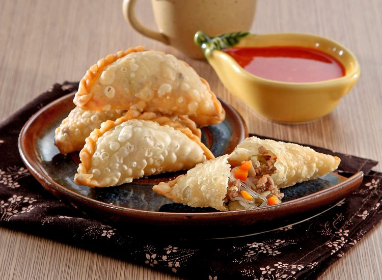

1.Coto Makassar

Coto Makassar, juga dikenal sebagai Coto Mangkasara mungkin adalah hidangan Makassar yang paling
populer. Ditemukan di hampir setiap sudut kota, hidangan ini 'harus dicoba' untuk melengkapi
kunjungan Anda ke Makassar. Variasi lain dari soto atau semur populer Indonesia, coto Makassar
menggunakan daging sapi yang dicampur dengan berbagai jeroan seperti hati, paru-paru, jantung,
babat, atau otak sapi. Alih-alih nasi kukus, sup ini secara tradisional disajikan dengan kue beras
ketupat atau buras. Hidangan ini mencakup banyak rempah-rempah yang berbeda dan telah sangat
dipengaruhi oleh masakan Timur Tengah dengan jinten, ketumbar dan kayu manis, dan penambahan kacang
kedelai yang difermentasi, atau tauco. Selengkapnya...
2.Konro karebosi

Jalan-jalan ke Makassar tak lengkap tanpa mampir ke Konro Karebosi. Di sini ada konro bakar dan sup
konro yang kenikmatannya tak tertandingi.
Makassar menawarkan banyak pilihan kuliner tradisional enak. Ada coto, pallubasa, sampai konro yang
sayang dilewatkan. Sebagai penggemar iga sapi, kami tak melewatkan sajian konro di kota yang
memiliki ikon Pantai Losari ini.
Dari banyaknya tempat makan konro di Makassar, Konro Karebosi adalah yang paling terkenal. Lokasinya
ada di Jalan Gunung Lompobattang, menempati bangunan ruko dua lantai. Rumah makan ini selalu ramai
terutama di jam makan siang dan malam. Selengkapnya...
3.Pallubasa

pallubasa adalah makanan khas makassar yang sangat disukai orang makassar, karena dia terbuat dari
daging sapi yang di cincang cincang dan di kasih kuah kental, pallubasa ini hampir mirip dengan coto
makassar tapi cuman beda rasa saja. Selengkapnya...
4.Mie Titi
.webp)
Sajian khas Makassar ini mirip dengan ifumie yang biasa kita jumpai . Hanya saja mie yang digunakan
sangat khas, yaitu berukuran kecil dan lurus seperti lidi. Mie titi yang gurih disirami kuah kental
yang dibuat dari telur dan tepung maizena. Bumbunya sangat sederhana, cukup bawang putih saja. Bahan
pelengkap lainnya tinggal disesuaikan selera, seperti udang, ayam, telur, atau bakso. Selengkapnya...
5.Jalangkote

Jalangkote adalah makanan ringan kuliner khas Makassar yang bentuknya serupa dengan kue pastel.
Bedanya kue pastel memiliki kulit yang lebih tebal dibandingkan jalangkote dan bila pastel dimakan
bersama cabe rawit , jalangkote dimakan bersama sambal cair campuran cuka dan cabe.
Jalangkote memiliki isi wortel dan kentang yang dipotong dadu, tauge, serta laksa yang ditumis
dengan menggunakan bawang putih, bawang merah, merica, dan bumbu-bumbu lainnya. Beberapa jalangkote
menambahkan seperempat atau setengah telur rebus dan daging cincang untuk isinya.
Kulit jalangkote terbuat dari bahan dasar tepung terigu, telur, santan, mentega, dan garam. Selengkapnya...